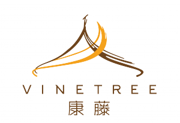

- 康藤Vinetree是来自中国的生态旅游品牌，品牌旗下运营着中国首家，同时是世界海拔最高的精品帐篷营地——康藤·格拉丹帐篷营地，以及生态旅游线路。2009年，“康藤”由一群热爱自然、有志于投资创新旅游产品的人士联合创建于云南。一直以来，我们致力于深度自然与文化体验，打造高品质的生态旅游产品，并倡导负责任的旅行。
- “康藤Vinetree”的中文名“康藤”最初的创意是来自英语“Camp & Tent”（露营和帐篷）的中文音译，而“康藤”二字本身也代表了新兴生态旅游产品健康且生机勃勃的形象。“Vinetree”即藤与树的结合，寓意着“野、生根、顽强、共生和顺其自然”。
- 康藤将 “云深不知处，致远见康藤”(“When the road ends, the Vinetree starts”) 作为自己的品牌宣传语，承袭了中国“道学”意境，阐明了人不能脱离自然独立存在，而只能与自然相依相存的宏大宇宙观，并点明人为之路的尽头，便是自然之路的开始，最高深的智慧便是“顺其自然”。同时，这也是所有参与康藤系列作品体验的宾客所能感受到的直观感觉，经过长途跋涉，改乘各类不同的交通工具，无论路途多么颠簸，到达目的地时总会有惊喜出现。
